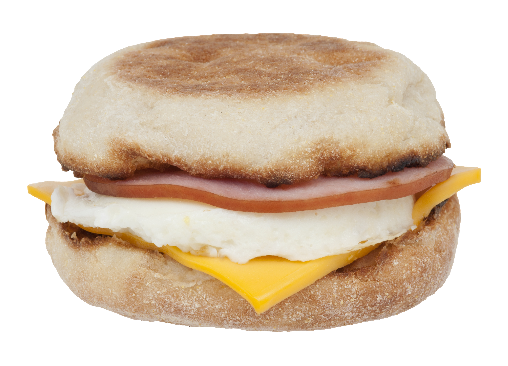

<- The Lazy Chef
Egg McMuffin Kopycat Recipe

Ingredients:
- English muffin
- Yellow american cheese
- Butter
- Egg
- Canadian bacon
- Cooking spray
- 1/3rd cup water
- Aluminum foil
Steps:
- Preheat skillet over medium heat, cook canadian bacon 2 mins per side.
- Spray mason jar lid with cooking spray, then add to the same skillet.
- Crack egg into mason jar lid, pop the yolk, add water to the skillet, surrounding the lid, cover - cook for 3 minutes 30 seconds.
- Toast the English muffin on 5 or 6, add butter when it's done.
- Once the egg is finished, remove it from the lid and add it to the english muffin, add american cheese to the bottom muffin and canadian bacon to the top,
wrap in aluminum foil for 3 minutes. - Enjoy!